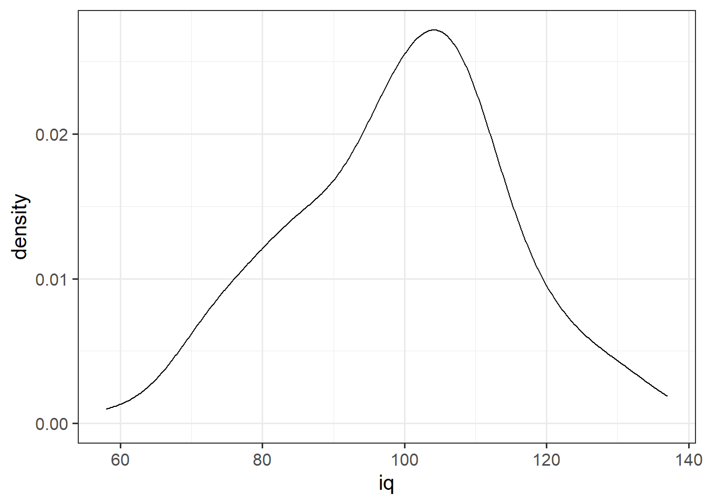

2A: Measurement & Distributions
This reading:
- What different types of data can we collect?
- How can we summarise distributions of different types of data?
- What are the different styles of coding in R?
- How do we make nice plots of distributions?
Types of Data
In the dice-rolling example we saw last week, each roll of the die could take one of a discrete set of responses (1, 2, 3, 4, 5 or 6). A die cannot land on 5.3, or 2.6.
There are many different things we can measure / record on observational units, and the data we collect will also have different characteristics. Some data will be similar to rolling a die in that values take on categories, and others could take any value on a continuous scale.
For example, in the last couple of years during welcome week, we have asked students of the statistics courses in the Psychology department to fill out a little survey. Amongst other things, we capture data on student heights (we asked for answers in cm, and respondents could be precise as they liked) and the colours of they eyes (we gave a set of options to choose from). We distinguish between these different types of data by talking about variables that are categorical (responses take one of a set of defined categories: “blue”, “green”, and so on..) and those that are numeric (responses are in the form of a number). Within each of these, there also are a few important sub-classes.
When we collect observations on a variable, the resulting set of measurements is known as a distribution. This reading walks through the various different types of data we might encounter, and some of the metrics we use to summarise distributions of different types.
We will use a dataset on some of the most popular internet passwords, their strength, and how long it took for an algorithm to crack it. The data are available online at https://uoepsy.github.io/data/passworddata.csv.
Data: Passwords
pwords <- read.csv("https://uoepsy.github.io/data/passworddata.csv")| Variable Name | Description |
|---|---|
| rank | Popularity in the database of released passwords |
| password | Password |
| type | Category of password |
| cracked | Time to crack by online guessing |
| strength | Strength = quality of password where 10 is highest, 1 is lowest |
| strength_cat | Strength category (weak, medium, strong) |
Categorical
Categorical variables tell us what group or category each individual belongs to. Each distinct group or category is called a level of the variable.
| Type | Description | Example |
|---|---|---|
| Nominal (Unordered categorical) | A categorical variable with no intrinsic ordering among the levels. | Species: Dog, Cat, Parrot, Horse, … |
| Ordinal (Ordered categorical) | A categorical variable which levels possess some kind of order | Level: Low, Medium, High |
| Binary categorical | A special case of categorical variable with only 2 possible levels | isDog: Yes or No. |
If we want to summarise a categorical variable into a single number, then the simplest approach is to use the mode:
- Mode: The most frequent value (the value that occurs the greatest number of times).
When we have ordinal variables, there is another option, and that is to use the median:
- Median: For ordinal variables only, this is the value for which 50% of observations are lower and 50% are higher. It is the mid-point of the values when they are rank-ordered.
When we use the median as our measure of “central tendency” (i.e. the middle of the distribution) and we want to discuss how spread out the spread are around it, then we will want to use quartiles. The Inter-Quartile Range (IQR) is obtained by rank-ordering all the data, and finding the points at which 25% (one quarter) and 75% (three quarters) of the data falls below (this makes the median the “2nd quartile”).
In our dataset on passwords, we have various categorical variables, such as the type of password (categories like “animal”, “fluffy” etc).
There are various ways we might want to summarise categorical variables like this. We have already seen the code to do this in our example of the dice simulation - we can simply counting the frequencies in each level:
table(pwords$type)
animal cool-macho fluffy food
29 79 44 11
name nerdy-pop password-related rebellious-rude
183 30 15 11
simple-alphanumeric sport
61 37 This shows us that the mode (most common) is “name” related passwords.
We could also convert these to proportions, by dividing each of these by the total number of observations. For instance, here are the percentages of passwords of each type:
table(pwords$type) / sum(table(pwords$type)) * 100
animal cool-macho fluffy food
5.8 15.8 8.8 2.2
name nerdy-pop password-related rebellious-rude
36.6 6.0 3.0 2.2
simple-alphanumeric sport
12.2 7.4 Often, if the entries in a variable are characters (letters), then many functions in R (like table()) will treat it the same as if it is a categorical variable. However, this is not always the case, so it is good to tell R specifically that each variable is a categorical variable. There is a special way that we tell R that a variable is categorical - we set it to be a “factor”. Note what happens when we make the “type” and “strength_cat” variables to be a factor:
pwords$type <- factor(pwords$type)
pwords$strength_cat <- factor(pwords$strength_cat)
summary(pwords) rank password type cracked
Min. : 1.0 Length:500 name :183 Min. : 1.290
1st Qu.:125.8 Class :character cool-macho : 79 1st Qu.: 3.430
Median :250.5 Mode :character simple-alphanumeric: 61 Median : 3.720
Mean :250.5 fluffy : 44 Mean : 5.603
3rd Qu.:375.2 sport : 37 3rd Qu.: 3.720
Max. :500.0 nerdy-pop : 30 Max. :92.270
(Other) : 66
strength strength_cat
Min. : 1.000 medium:402
1st Qu.: 6.000 strong: 25
Median : 7.000 weak : 73
Mean : 6.768
3rd Qu.: 8.000
Max. :10.000
R now recognises that there a set number of possible response options, or “levels”, for these variables. We can see what they are using:
levels(pwords$strength_cat)[1] "medium" "strong" "weak" The “strength_cat” variable specifically has an ordering to the levels, so we might be better off also telling R about this ordering. We do this like so:
pwords$strength_cat <- factor(pwords$strength_cat, ordered = TRUE, levels = c("weak","medium","strong"))Sometimes, we might have a variable that we know is categorical, but we might want to treat it as a set of numbers instead. A very common example in psychological research is Likert data (questions measured on scales such as “Strongly Disagree”>>“Disagree”>>…>>“Strongly Agree”).
It is often useful to have these responses as numbers (e.g. 1 = “Strongly Disagree” to 5 = “Strongly Agree”), as this allows us to use certain functions in R more easily. For instance, the median() and IQR() functions require the data to be numbers.
This will not work:
median(pwords$strength_cat)Error in median.default(pwords$strength_cat): need numeric dataWhen we ask R to convert a factor to a numeric variable, it will give turn the first category into 1, the second category to 2, and so on. As R knows that our strength_cat variable is the ordered categories “weak”>>“medium”>>“strong”, then as.numeric(pwords$strength_cat) will turn these to 1s, 2s, and 3s.
median(as.numeric(pwords$strength_cat))[1] 2Numeric
Numeric (or quantitative) variables consist of numbers, and represent a measurable quantity. Operations like adding and averaging make sense only for numeric variables.
| Type | Description | Example |
|---|---|---|
| Continuous | Variables which can take any real number within the specified range of measurement | Height: 172, 165.2, 183, … |
| Discrete | Variables which can only take integer number values. For instance, a counts can only take positive integer values (0, 1, 2, 3, etc.) | Number_of_siblings: 0, 1, 2, 3, 4, … |
One of the most frequently used measures of central tendency for numeric data is the mean. The mean is calculated by summing all of the observations together and then dividing by the total number of obervations (\(n\)).
Mean: \(\bar{x}\)
When we have sampled some data, we denote the mean of our sample with the symbol \(\bar{x}\) (sometimes referred to as “x bar”). The equation for the mean is:
\[\bar{x} = \frac{\sum\limits_{i = 1}^{n}x_i}{n}\]
If we are using the mean as our as our measure of central tendency, we can think of the spread of the data in terms of the deviations (distances from each value to the mean).
Recall that the mean is denoted by \(\bar{x}\). If we use \(x_i\) to denote the \(i^{th}\) value of \(x\), then we can denote deviation for \(x_i\) as \(x_i - \bar{x}\).
The deviations can be visualised by the red lines in Figure 2.
The sum of the deviations from the mean, \(x_i - \bar x\), is always zero
\[ \sum\limits_{i = 1}^{n} (x_i - \bar{x}) = 0 \]
The mean is like a center of gravity - the sum of the positive deviations (where \(x_i > \bar{x}\)) is equal to the sum of the negative deviations (where \(x_i < \bar{x}\)).
Because deviations around the mean always sum to zero, in order to express how spread out the data are around the mean, we must we consider squared deviations.
Squaring the deviations makes them all positive. Observations far away from the mean in either direction will have large, positive squared deviations. The average squared deviation is known as the variance, and denoted by \(s^2\)
Variance: \(s^2\)
The variance is calculated as the average of the squared deviations from the mean.
When we have sampled some data, we denote the mean of our sample with the symbol \(\bar{x}\) (sometimes referred to as “x bar”). The equation for the variance is:
\[s^2 = \frac{\sum\limits_{i=1}^{n}(x_i - \bar{x})^2}{n-1}\]
One difficulty in interpreting variance as a measure of spread is that it is in units of squared deviations. It reflects the typical squared distance from a value to the mean.
Conveniently, by taking the square root of the variance, we can translate the measure back into the units of our original variable. This is known as the standard deviation.
Standard Deviation: \(s\)
The standard deviation, denoted by \(s\), is a rough estimate of the typical distance from a value to the mean.
It is the square root of the variance (the typical squared distance from a value to the mean).
\[ s = \sqrt{\frac{\sum\limits_{i=1}^{n}(x_i - \bar{x})^2}{n-1}} \]
In the passwords dataset, we only have one continuous variable, and that is the “cracked” variable, which if we recall is the “Time to crack by online guessing”. You might be questioning whether the “strength” variable, which ranges from 1 to 10 is numeric? This depends on whether we think that statements like “a password of strength 10 is twice as strong as a password of strength 5”.
For now, we’ll just look at the “cracked” variable.
To calculate things like means and standard deviations in R is really easy, because there are functions that do them all for us.
For instance, we can do the calculation by summing the cracked variable, and dividing by the number of observations (in our case we have 500 passwords):
# get the values in the "cracked" variable from the "pwords" dataframe, and
# sum them all together. Then divide this by 500
sum(pwords$cracked)/500[1] 5.60266Or, more easily, we can use the mean() function:
mean(pwords$cracked)[1] 5.60266We can get R to calculate the variance and standard deviation with the var() and sd() functions:
var(pwords$cracked)[1] 71.16618sd(pwords$cracked)[1] 8.436005and just to prove to ourselves:
sd(pwords$cracked)^2 == var(pwords$cracked)[1] TRUEIf a column of our dataset contains only numbers, R will typically just interpret it as a numeric variable. However, we should still be careful; remember what happens if we have just one erroneous entry in there - they can all change to be characters (surrounded by quotation marks):
c(1,3,6,"peppapig",3)[1] "1" "3" "6" "peppapig" "3" We can force a variable to be numeric by using as.numeric(), which will also coerce any non-numbers to be NA (not applicable):
as.numeric(c(1,3,6,"peppapig",3))[1] 1 3 6 NA 3If there is an NA in the variable, many functions like mean(), var() and sd() will not compute:
x <- c(1, 3, 6, NA, 3)
mean(x)[1] NAHowever, we can ask these functions to remove the NAs prior to the computation:
mean(x, na.rm = TRUE)[1] 3.25Tidyverse and pipes!
Before we get started on some visualisations, we’re going to briefly introduce some crucial bits of R code.
We have seen already seen a few examples of code such as:
# show the dimensions of the data
dim(somedata)
# show the frequency table of values in a variable
table(somedata$somevariable)And we have seen how we might wrap functions inside functions:
barplot(table(somedata$somevariable))This sort of writing (functions inside functions inside functions) involves R evaluating code from the inside out. But a lot of us don’t intuitively think that way, and actually find it easier to think in terms of a sequence. The code barplot(table(somedata$somevariable)) could be read as “take this variable, then make a table of it, then make a barplot of that table”.
We can actually write code that better maps to this way of reading, using a nice little symbol called a “pipe”:
Piping
We can write in a different style, however, and this may help to keep code tidy and easily readable - we can write sequentially:
Notice that what we are doing is using a new symbol: %>%
This symbol takes the output of whatever is on it’s left-hand side, and uses it as an input for whatever is on the right-hand side.
The %>% symbol gets called a “pipe”.
Let’s see it in action with the passwords dataset we’ve been using. First we need to load the tidyverse packages, because that is where %>% is found.
library(tidyverse)We can now write code that instead of requiring reading from the inside-out:
barplot(table(pwords$type))can be read from left to right:
pwords$type %>%
table() %>%
barplot()Both of which do exactly the same thing! They create the plot below:
We’re going to use pipes a lot throughout this course, and it pairs really well with a group of functions in the tidyverse packages, which were designed to be used in conjunction with a pipe:
select()extracts columns
filter()subsets data based on conditions
mutate()adds new variables
group_by()group related rows together
summarise()/summarize()reduces values down to a single summary
Typically, the tidyverse means that we no longer have to keep telling R in which dataframe to look for the variable. The tidyverse functions are designed to make things is a bit easier. Let’s take a look at how.
You’ll notice that the code has lots of indentations to make it more readable, which RStudio does for you when you press enter!
select()
We know about using $ to extract a column from a dataframe. The select() function is a little bit like that - it allows us to choose certain columns in a dataframe. It will return all rows.
Because we can select multiple columns this way, it doesn’t return us a vector (in the way dataframe$variable does), but returns a dataframe:
# take the data
# and select the "variable1" and "variable2" columns
data %>%
select(variable1, variable2)Tidyverse
pwords %>% select(type, strength)Base R
pwords[, c("type","strength")]filter()
The filter() function is a bit like the [] to choose rows that meet certain conditios - it allows us to filter a dataframe down to those rows which meet a given condition. It will return all columns.
# take the data
# and filter it to only the rows where the "variable1" column is
# equal to "value1".
data %>%
filter(variable1 == value1)Tidyverse
pwords %>%
filter(strength_cat == "strong")Base R
pwords[pwords$strength_cat == "strong", ]mutate()
The mutate() function is used to add or modify variables to data.
# take the data
# %>%
# mutate it, such that there is a variable called "newvariable", which
# has the values of a variable called "oldvariable" multiplied by two.
data %>%
mutate(
newvariable = oldvariable * 2
)To ensure that our additions/modifications of variables are stored in R’s environment (rather than simply printed out), we need to reassign the name of our dataframe:
data <-
data %>%
mutate(
...
)Note: Inside functions like mutate(), we don’t have to keep using the dollar sign $, as we have already told it what data to look for variables in.
Tidyverse
pwords <- pwords %>%
mutate(
cracked_min = cracked / 60
)Base R
pwords$cracked_min <- pwords$cracked / 60summarise()
The summarise() function is used to reduce variables down to a single summary value.
# take the data %>%
# summarise() it, such that there is a value called "summary_value", which
# is the sum() of "variable1" column, and a value called
# "summary_value2" which is the mean() of the "variable2" column.
data %>%
summarise(
summary_value = sum(variable1),
summary_value2 = mean(variable2)
)Tidyverse
pwords %>%
summarise(
mean_cracked = mean(cracked),
sd_cracked = sd(cracked),
nr_strong = sum(strength_cat == "strong")
)Base R
To store these all in the same object (like the tidyverse way) we would have to create a data.frame() and add these as variables.
mean(pwords$cracked)
sd(pwords$cracked)
sum(pwords$strength_cat == "strong")group_by()
The group_by() function is often used as an intermediate step in order to do something. For instance, if we want to summarise a variable by calculating its mean, but we want to do that for several groups, then we first group_by() and then summarise():
# take the data %>%
# and, grouped by the levels of the "mygroups" variable,
# summarise() it so that there is a column called "summary_col", which
# is the mean of the "variable1" column for each group.
data %>%
group_by(mygroups) %>%
summarise(
summary_col = mean(variable1)
)Tidyverse
pwords %>%
group_by(strength_cat) %>%
summarise(
mean_cracked = mean(cracked)
)Base R
This is less easy. There are functions in Base R that can do similar things, but we’re not going to teach those here. You could envisage getting all the same values by doing:
mean(pwords$cracked[pwords$strength_cat == "weak"])
mean(pwords$cracked[pwords$strength_cat == "medium"])
mean(pwords$cracked[pwords$strength_cat == "strong"])Other pipes!
The %>% pipe came on the scene in around 2014, and has been part of a huge shift since then in the way that many people use R.
Very recently, some of the functionality of the pipe has been added to the standard R installation (what tends to be referred to as “Base R”). This has come in the form of the Base R pipe: |>.
# for %>% we need the tidyverse
library(tidyverse)
1:10 %>% mean()# the base R pipe
1:10 |> mean()In time, it is possible that usage of %>% will tend to be replaced in favour of this new one, and for most purposes they are interchangeable.
In this course we continue to use %>%
ggplot
We’re going to now make our first steps into the world of data visualisation, and start learning some methods for presenting plots of distributions of various types of data. R is an incredibly capable language for creating visualisations of almost any kind. It is used by many media companies (e.g., the BBC), and has the capability of producing 3d visualisations, animations, interactive graphs, and more.
“By visualizing information, we turn it into a landscape that you can explore with your eyes. A sort of information map. And when you’re lost in information, an information map is kind of useful.” – David McCandless
We are going to use the most popular R package for visualisation: ggplot2. This is actually part of the tidyverse, so if we have an R script, and we have loaded the tidyverse packages at the start (by using library(tidyverse)), then ggplot2 will be loaded too).
Recall our way of plotting frequencies that we have seen so far (we saw this in the dice simulations):
barplot(table(pwords$type))
We can also use ggplot() to visualise this. The benefit is that we can easily then edit all aspects of the visualisation.
# create the plot, and give the "mappings"
ggplot(data = pwords, aes(x = type)) +
# add some shapes
geom_bar() +
# add some titles, change axes labels etc
labs(title = "Password type frequencies", x = "password type") +
# edit the scales of the x axis
scale_x_discrete(labels = abbreviate)Basic ggplot components
Note the key components of the ggplot code.
data =where we provide the name of the dataframe.aes =where we provide the aesthetics. These are things which we map from the data to the graph. For instance, the x-axis, or if we wanted to colour the columns/bars according to some aspect of the data.
Then we add (using +) some geometry. These are the shapes (in our case, the columns/bars), which will be put in the correct place according to what we specified in aes().
+ geom_....Adds different shapes (e.g., bars) to the plot.
You can find great documentation on ggplot2 at https://www.statsandr.com/blog/graphics-in-r-with-ggplot2/.

Visualising Distributions
Boxplots
Boxplots provide a useful way of visualising the interquartile range (IQR). You can see what each part of the boxplot represents in Figure Figure 4.

We can create a boxplot of our age variable using the following code:
# Notice, we put strength on the x axis, making the box plot vertical.
# If we had set aes(y = strength) instead, then it would simply be rotated 90 degrees
ggplot(data = pwords, aes(x = strength)) +
geom_boxplot()Histograms
Now that we have learned about the different measures of central tendency and of spread, we can look at how these map to how visualisations of numeric variables look.
We can visualise numeric data using a histogram, which shows the frequency of values which fall within bins of an equal width.
To do this, we’re going to use some new data, on 120 participants’ IQ scores (measured on the Wechsler Adult Intelligence Scale (WAIS)), their ages, and their scores on 2 other tests. The data are available at https://uoepsy.github.io/data/wechsler.csv
wechsler <- read_csv("https://uoepsy.github.io/data/wechsler.csv")# make a ggplot with the "wechsler" data.
# on the x axis put the possible values in the "iq" variable,
# add a histogram geom (will add bars representing the count
# in each bin of the variable on the x-axis)
ggplot(data = wechsler, aes(x = iq)) +
geom_histogram()We can specifiy the width of the bins:
ggplot(data = wechsler, aes(x = iq)) +
geom_histogram(binwidth = 5)Let’s take a look at the means and standard deviations of participants’ scores on the other tests (the test1 and test2 variables).
Note how nicely we can do this with our newfound tidyverse skills!
wechsler %>%
summarise(
mean_test1 = mean(test1),
sd_test1 = sd(test1),
mean_test2 = mean(test2),
sd_test2 = sd(test2)
)# A tibble: 1 × 4
mean_test1 sd_test1 mean_test2 sd_test2
<dbl> <dbl> <dbl> <dbl>
1 49.3 7.15 51.2 14.4Tests 1 and 2 have similar means (around 50), but the standard deviation of Test 2 is almost double that of Test 1. We can see this distinction in the visualisation below - the histograms are centered at around the same point (50), but the one for Test 2 is a lot wider than that for Test 1.

Density
In addition to grouping numeric data into bins in order to produce a histogram, we can also visualise a density curve.
Because there are infinitely many values that numeric variables could take (e.g., 50, 50.1, 50.01, 5.001, …), we could group the data into infinitely many bins. This is essentially what we are doing with a density curve.
You can think of “density” as a bit similar to the notion of “relative frequency” (or “proportion”), in that for a density curve, the values on the y-axis are scaled so that the total area under the curve is equal to 1. In creating a curve for which the total area underneath is equal to one, we can use the area under the curve in a range of values to indicate the proportion of values in that range.
ggplot(data = wechsler, aes(x = iq)) +
geom_density()
Area under the curve
Think about the barplots we have been looking at in the exercises where we simulate dice rolling :
# our function to simulate the roll of a die/some dice
dice <- function(num = 1) {
sum(sample(1:6, num, replace=TRUE))
}
# simulate 1000 rolls of a single die
roll1000 <- replicate(1000, dice(1))
# tabulate and plot:
table(roll1000) %>%
barplot(.,ylab="count")To think about questions like “what proportion of 1000 rolls does the die land on 6?”, we are simply interested in the count of 6s divided by the count of all rolls:
tab1000 <- table(roll1000)
tab1000roll1000
1 2 3 4 5 6
162 169 167 189 152 161 tab1000[6] / sum(tab1000) 6
0.161 So Another way of thinking of this is that we are just dividing the count in each category by the total number. Or, Put another way, imagine we divide the area of each bar by the total area. The area now sums to 1, and our question is asking about the ratio of the red area to the total area (grey + red):
Nothing really changes with a density curve! If we want to ask what proportion of our distribution of IQ scores is >120, then we are asking about the area under the curve that is to the right of 120:
It looks like about a third, maybe a little less. Let’s calculate this proportion directly:
sum(wechsler$iq>110) / length(wechsler$iq)[1] 0.2It might seem a little odd to think about area under the curve when we are asking about “what proportion of the data is …?”. If we have the data, then we can just calculate the answer (like we did above). However, a lot of statistics is really concerned with the probability of events. When we discuss probability, we move from talking about a specific set of observed data to thinking about a theoretical/mathematical model that defines the way in which data is generated. This where it becomes more useful to think about distributions in a more abstract sense.
For instance, with a fair six-sided die, we have a probability distribution (Figure 5) in which each side is given the probability \(\frac{1}{6}\):
\[ \begin{gather*} P(x) = \begin{cases} \frac{1}{6} & \text{if $x \in \{1,2,3,4,5,6\}$}\\ 0 & \text{otherwise.} \end{cases} \end{gather*} \]
Instead of rolling a die, suppose that we are picking a person off the street and measuring their IQ. Given that IQ scales are designed to have a mean of 100 and standard deviation of 15, what is the probability that we pick a person with an IQ of greater than 110?